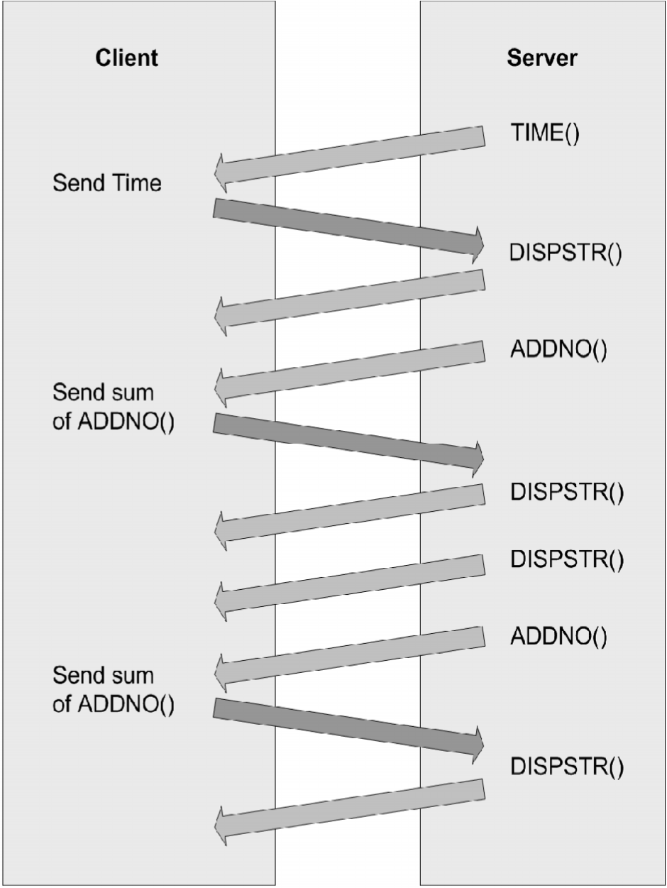
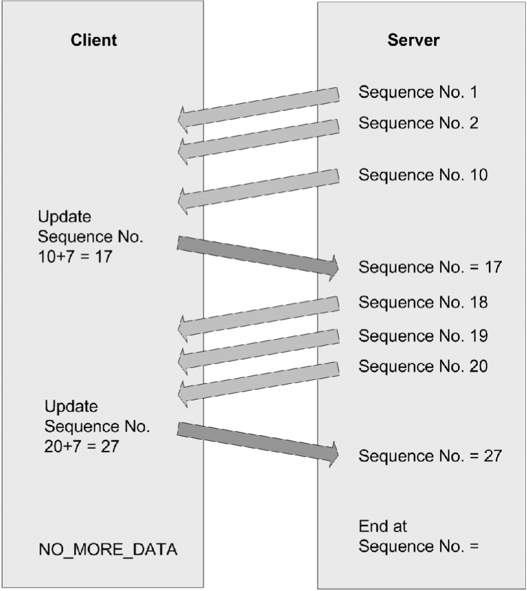

Using Example Programs
The example programs included with the Virtual Channel SDK are buildable, working virtual channels. Use these examples to:
-
Verify your Virtual Channel SDK installation is correct by building a known working example program.
-
Provide working examples of code that can be modified to suit your requirements.
-
Explore the features and functionality provided in the Virtual Channel SDK.
Each of these example programs comprises a client virtual driver and a server application. The server-side application is run from the command line within an ICA session. A single virtual channel comprises an application pair.
The example programs included with the Virtual Channel SDK are:
Ping: Records the round-trip delay time for a test packet sent over a virtual channel.
Mix: Demonstrates a mechanism to call functions (for example, to get the time of day) on a remote client.
Over: Simple asynchronous application that demonstrates how to code an application where the server must receive a response from the client asynchronously, and where the type of packet being sent to the client is different from the type received.
OXS: Demonstrates sub-window or overlay buffers, events, and timers.
Each example includes a description of the program, packet format, and other necessary information.
Ping
Ping is a simple program that records the round-trip delay time for a test packet sent over a virtual channel. The server sends a packet to the client and the client responds with a packet containing the time it received the original packet from the server. This sequence is repeated a specified number of times, and then the program displays the round-trip time for each ping and the average round-trip delay time.
For this example, there is no significant difference between a BEGIN packet and an END packet. The two types of packets are provided as an example for writing your own virtual channel protocols.
This program demonstrates:
-
How to transfer data synchronously. The sequence of events is: {SrvWrite, ClntRead, ClntWrite, SrvRead} {SrvWrite, ClntRead} {...}. The server waits for the client to reply before sending the next packet.
-
How to read parameter data (in this case, the number of times to send packets to the client) from the Module.ini files.
Packet Format
The following packet is exchanged between the client and the server.
typedef struct PING {
USHORT uSign; // Signature
USHORT uType; // Type, BEGIN or END, from server
USHORT uLen; // Packet length from server
USHORT uCounter; // Sequencer
ULONG ulServerMS; // Server millisecond clock
ULONG ulClientMS; // Client millisecond clock
} PING, *PPING;
Mix
Mix demonstrates a mechanism that can be used to call functions on a remote client (for example to get the time of day). This program demonstrates an extensible scheme for making function calls from the server to the client that allows the server to specify when it expects a response from the client and when it does not. This method can increase performance, because the server does not have to constantly wait for a reply from the client.
The server calls a series of simple functions:
-
AddNo: Add two numbers and return the sum as the return value.
-
DispStr: Write a string to the log file. There is no return value (write-only function).
-
Gettime: Read the client time and return it as the return value.
The actual implementation of these functions is on the client side. The server conditionally waits for the response from the client, depending on the function being executed. For example, the server waits for the result of the AddNo or Gettime function, but not the write-only function DispStr, which returns no result.
Packet Format
typedef struct MIXHEAD {
USHORT uType // Packet type
USHORT uFunc; // Index of Function
ULONG uLen; // Length of data
USHORT fRetReq; // True if return value required
ULONG dwRetVal; // Return Value from client
USHORT dwLen1; // length of data for \#1 LpVoid
USHORT dwLen2; // length of data for \#2 LpVoid
} MIXHEAD, *PMIXHEAD;
The data consists of the above structure followed by the arguments to the function being called. uLen is the total length of the data being sent, including the arguments. DwLen1 is the length of the data pointed to by a pointer argument.
Sequence of Events
The Mix program demonstrates the following sequence of events. See the graphic on the next page.
This figure illustrates the sequence of events that occurs when you use the Mix program, starting at the top.

Over
Over is a simple asynchronous application. It demonstrates how to code an application in which the server must receive a response from the client asynchronously, and the type of packet being sent to the client is different from the type received.
When the Over program begins, it:
-
Spawns a thread that waits for a response from the client.
-
Begins sending data packets with sequence numbers to the client.
-
(After sending the last packet of data) sends a packet with a sequence number of NO_MORE_DATA, and then closes the connection.
The client receives packets and inspects the sequence number. For every sequence number divisible by 10, the client increases the sequence number by 7 and sends a response to the server. These numbers are chosen arbitrarily to demonstrate that the client can asynchronously send data to the server at any time.
The packet type used to send data from the server to the client is different from the packet type used to receive data from the client.
Packet Format - From Server to Client
typedef struct OVER {
USHORT uSign; // Signature
USHORT uType; // Type, BEGIN or END, from server
USHORT uLen; // Packet length from server
USHORT uCounter; // Sequencer
ULONG ulServerMS; // Server millisecond clock
} OVER, *POVER;
Packet Format - From Client to Server
typedef struct DRVRESP {
USHORT uType; // Type OVERFLOW_JUMP from client
USHORT uLen; // Packet length from client
USHORT uCounter; // seqUencer
} DRVRESP, * PDRVRESP;
Sequence of Events
This figure illustrates the sequence of events that occurs when you use the Over program, starting at the top.

OXS
OXS is the Noughts and Crosses game. The OXS virtual channel implements remote drawing of this game. The purpose of this is to demonstrate the following interfaces, which are specific to the Receiver for Linux:
-
Sub-windows or overlay buffers
-
Events (the selection of File Descriptor)
-
Timers
The client component of the OXS virtual driver implements the drawing of the game. All processing of the game play is performed on the server. To achieve client-side drawing, a sub-window (child) of the session window is obtained using the sub-window interface. The sub-window is placed over the corresponding area of the game window, and every movement to the server-side game window is mimicked by the sub-window. This creates the impression of a single application. Mouse clicks and interaction with the server-side OXS application are converted into Play Move, Winning Line, Move Window, and Close Window commands. These are received by the virtual driver and translated into corresponding actions and X drawing commands.
This sub-window technology is most useful for solutions such as local video decoding. The sub-window interface is not designed to take keyboard and mouse input. It is intended to render graphics.
In addition, the OXS virtual driver uses the events (Evt) interface. This monitors the X server file descriptor for Expose events, which allows a callback to redraw the game area for every event.
The OXS virtual driver also uses the timer (Tmr) interface. This works around a race condition between the OXS and Seamless virtual channels. Although the sub-window used for drawing mimics the movements of the server side window, if Seamless is used a race condition occurs between the movement of the Seamless server-side window and the sub-window. The timer is used to delay the sub-window position update until after the Seamless window move is complete.
Note: The sample application below is a basic one and does not use the MM_clip api. In this case, the overlaid session sub-window is never clipped and is always an on top square.
Clipping the session sub-window properly can give the appearance that it is in the remote sessions window stack, even though it is actually overlaid on top of the session. This is not something this example does.
Building Examples
Building a Server-side Example using Nmake
Examples of the latest server-side executables have been provided for testing. Please download the latest Windows Virtual Channel SDK in order to develop the server-side component.
Building a Client-side Example using Linux
-
To start a build, open a terminal.
-
Change src/examples/vc/client/unix/MakeCOMMONVD to match the target platform.
Note: Linux does not require pingwire.c. Also, for Linux armel a cross compiler can be used. This is detected by the presence of the environment variable, CROSS_COMPILER_PREFIX
-
Set the environment variable HOST_PREFIX to the target:
-
linux for Linux x64
-
linux for Linux x86
-
linuxarm for Linux armel
-
linuxarmhf for Linux armhf
-
-
For example, to build vdping.dll, type:
cd src/examples/vc/client/vdping/unixand then typemake. The production (retail) and debug builds of vdping.dll are built in the lib subdirectory. Pre-built production versions are provided in the separate directories,src/examples/vc/client/vdping/linux/obj/retailandsrc/examples/vc/client/vdping/linuxarm/obj/retail. -
Perform the same process to build all other example virtual drivers.
Alternatively to build all example Virtual Drivers, type cd src/examples/vc/client and then run the build script.
Configuring the Virtual Driver
-
Copy the appropriate virtual driver for the platform to the client installation directory. For example, copy the Linux virtual driver, vdping.dll, in src/examples/vc/client/vdping/unix/lib/linux/retail for a locally built version, or in src/examples/vc/client/vdping/linux/obj/retail for a pre-built version to the client installation directory as VDPING.DLL.
-
In the client installation directory, modify the file config/module.ini and make the following changes:
-
In the [ICA 3.0] section append “Ping” to the VirtualDriver list.
-
In the [ICA 3.0] section add “Ping=On”.
-
-
Add a new section [Ping] with the entry “DriverName=VDPING.DLL”.
-
Copy ctxping.exe.sample from src/examples/vc/server/ctxping to the Citrix server and rename it to ctxping.exe.
-
Run ctxping at the command prompt within a client session to implement the Ping virtual channel.
Running an Example Virtual Channel
Examples of the latest server-side executables have been provided for testing.
-
On a client configured with the client-side example, connect to a server running XenApp or XenDesktop with the associated server-side example (located at base/examples/vc/server in this SDK).
-
Within the ICA session, run the server-side executable.
The server-side example queries the client-side virtual driver, and then displays the driver information. Use the -d parameter to display detailed information. For Ping only: CTXPING sends PingCount separate pings. PingCount has a default value of three, but can be set in the [Ping] section of the Module.ini file. Each ping consists of a BEGIN packet and an END packet.
Debugging a Linux Virtual Driver
Use the TRACE feature to log events on the client. To enable the TRACE statements, you must build the debug version of the virtual driver and create a debug.ini file in the current directory where the client is run.
When the debug module is installed on the client, the TRACE statements write the debug information to a file, ncs.log.<process id>. The following debug.ini contents create tracing for the example virtual channels:
\[ncs\] traceFlags = +LOG_PRINTF traceClasses = +TC_VD traceFeatures = +TT_ALL traceFile = ncs.log.\$\$
You can refine tracing by editing the traceFeatures line. For example, "traceFeatures = +TT_API1 | TT_API2" will only print trace statements of type TT_API1 and TT_API2.
The class flag for virtual channels is TC_VD. For the complete list of class and event flags, see logflags.h (located in src/inc/).
-
Compile the debug version of the virtual driver for the client platform.
-
If it is running, close the client on the client device.
-
Copy the debug version of the virtual driver to the client installation directory. For example, copy vdping.dll to the client installation directory as VDPING.DLL.
-
Ensure that config.ini and module.ini in the client installation directory are updated appropriately to load the new virtual driver, following the instructions for loading a production version of the virtual driver.
-
Create the debug.ini file in the current working directory.
-
Launch Receiver to implement the new virtual channel.